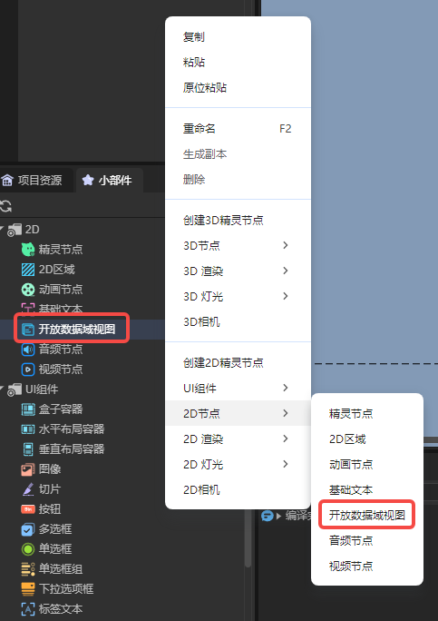
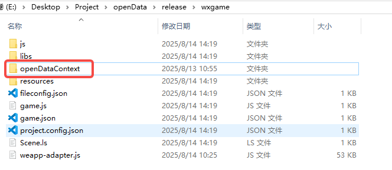
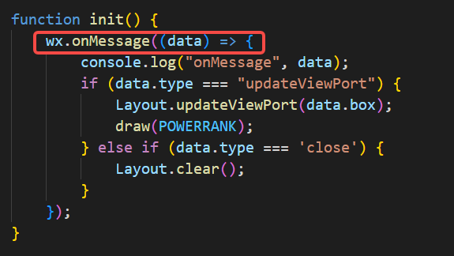
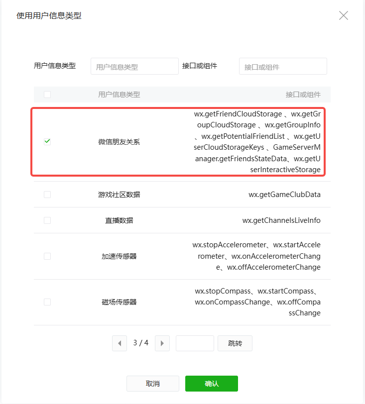
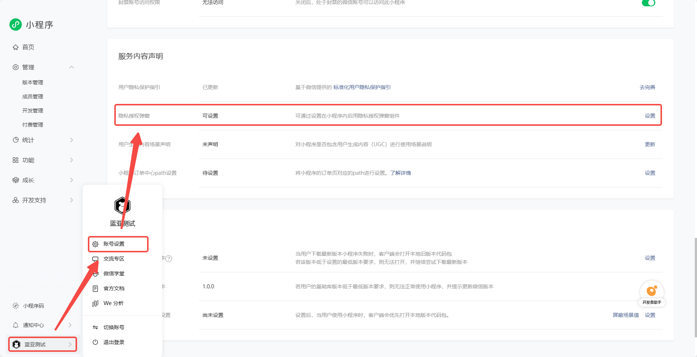
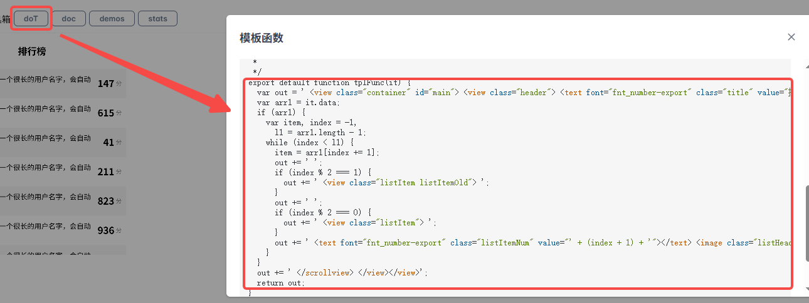
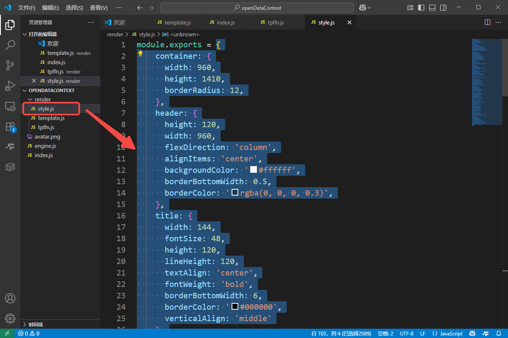

Open Data Context
1. Introduction to Open Data Context
The Open Data Context is a closed, independent JavaScript environment. When developing WeChat Mini Games, developers often want to implement social features, such as leaderboards or inviting other players to compete. These features require access to players’ private data. However, for security reasons, WeChat does not provide direct access to such data.
Figure 1-1: Leaderboard Example
To address this, WeChat provides the Open Data Context, a separate environment where developers can access certain player data and process it. The Open Data Context is isolated from the main game logic (main domain), and communication is one-way from main domain to Open Data Context.
Key points developers need to understand to use Open Data Context:
- Creating the Open Data Context – add a view node in the scene, and create an Open Data Context project file in the published Mini Game build.
- Communication between main domain and Open Data Context – send messages and player data from the main domain and handle them in the Open Data Context.
- Rendering in the Open Data Context – use the canvas engine to render data on the sharedCanvas accessible by both main and Open Data Contexts.
2. Creating an Open Data Context
You can create an Open Data Context node by:
- Right-clicking in the hierarchy panel, or
- Dragging from the widget panel:

You can also create it via script. Add a custom component to a Scene2D node with the following code:
const { regClass, property } = Laya;
@regClass()
export class NewScript extends Laya.Script {
constructor() {
super();
}
onAwake(): void {
let opendata = new Laya.OpenDataContextView();
Laya.stage.addChild(opendata);
opendata.pos(100,100);
opendata.size(500,500);
}
}
After creating the Open Data Context view node, you also need to create an Open Data Context project file for WeChat Mini Game development.
- Go to the Build & Publish panel, and check Generate Open Data Context Project Template. Then build the project:

- In the output folder, the
openDataContextfolder contains the Open Data Context project:

- The template contains a working example you can run in WeChat Developer Tools:

Notes about the template option:
- Checking this option is optional; you can manually create
openDataContextif desired. - If the folder already exists, the engine will not overwrite it.
- If unchecked, the engine deletes any existing
openDataContextfolder during build; ensure your code is backed up.
3. Communication between Main Domain and Open Data Context
One main feature of the Open Data Context is building leaderboards. You need to access player scores, avatars, and nicknames, and sometimes control the Open Data Context from the main domain. There are a few ways to communicate:
1. postMessage and onMessage
postMessage: sends messages from the main domain to Open Data Context.onMessage: listens for messages in the Open Data Context.
Example: add a component to a Scene2D node:
const { regClass, property } = Laya;
@regClass()
export class Script extends Laya.Script {
onAwake(): void {
//@ts-ignore
const openDataContext = wx.getOpenDataContext();
openDataContext.postMessage({
text: "Message from main domain",
});
}
}
In the Open Data Context’s index.js file, onMessage receives messages:


Note: Messages may print twice because the engine also triggers
postMessage.
postMessage is useful for events requiring immediate updates, e.g., refreshing the leaderboard after a button click.
2. setUserCloudStorage and getFriendCloudStorage
These methods store and retrieve user cloud data. Scores generated in-game may be uploaded to the server and retrieved later.
- Writing data with
setUserCloudStorage:
const { regClass, property } = Laya;
@regClass()
export class Script extends Laya.Script {
onAwake(): void {
let KVDataList = [];
for (let i = 0; i < 5; i++) {
KVDataList.push({ key: "test" + i, value: "" + i * 1000 });
}
//@ts-ignore
wx.setUserCloudStorage({
KVDataList,
success: () => console.log("Data saved successfully"),
fail: () => console.log("Failed to save data"),
complete: () => console.log("Call complete")
});
}
}
- Reading data with
getFriendCloudStorage:
In index.js of the Open Data Context:
wx.getUserCloudStorage({
keyList: ["test1", "test5"],
success: res => console.log("Data retrieved:", res),
fail: () => console.log("Failed to retrieve data"),
complete: () => console.log("Call complete")
});
Important: To access user data, your Mini Program must obtain user authorization:
- Go to WeChat Mini Program management → Account Settings → Service Content Declaration → User Privacy Protection Guide.
- Add WeChat Friend Relationship, complete the declaration, and enable the privacy authorization popup.




After this, you can access data of friends who have played the game.
4. Rendering in Open Data Context
After retrieving data (e.g., for a leaderboard), you need to render it. Open Data Context renders to a canvas, and you can use standard canvas APIs. To simplify development, using a lightweight canvas engine is recommended.
We will use minigame-canvas-engine (Layout).
Layout uses Web development concepts:
template→ structure of the Open Data Context (like HTML)style→ layout and styles (like CSS)JS→ interaction logic
Example index.js:
const Layout = require("./engine.js").default;
let sharedCanvas = wx.getSharedCanvas();
let sharedContext = sharedCanvas.getContext("2d");
let template = `
<view id="container">
<text id="testText" class="redText" value="hello canvas"></text>
</view>
`;
let style = {
container: {
width: 400, height: 200, backgroundColor: "#ffffff",
justifyContent: "center", alignItems: "center",
},
testText: { color: "#ffffff", width: "100%", height: "100%", lineHeight: 200, fontSize: 40, textAlign: "center" },
redText: { color: "#ff0000" },
};
function init() {
wx.onMessage((data) => {
Layout.clear();
Layout.init(template, style);
Layout.layout(sharedContext);
});
}
init();
Layout API:
Layout.updateViewPort– update canvas viewport info.Layout.clear– clear canvas and layout tree.Layout.init(template, style)– initialize layout tree.Layout.layout(context)– draw layout tree to canvas.
template is XML-like. style is key-value for layout properties. Learn more in the Layout documentation.
1. Template Engine
A template engine combines data with pre-defined templates to generate text (HTML/XML). This separates data from presentation logic.
Example using doT.js:
function tplFunc(it) {
var out = '<view id="container"><text id="testText" class="redText" value="' + it.title + '"></text></view>';
return out;
}
const it = { title: 'hello canvas' };
let template = tplFunc(it);
console.log(template);
Template engines support conditions, loops, and interpolation. Any engine that generates valid XML strings is fine.
For Open Data Context, developers should understand Web front-end basics, CSS, and Flex layout, since Layout only supports Flex.
5. Example Workflow
1. Create Project
Create a 2D empty project with three nodes:

TextInput– user input for simulated player data (e.g., score)Button– toggle Open Data Context displayOpenDataContext– Open Data Context node
2. Add Scripts
- TextInput Script – uploads input data to cloud:
const { regClass, property } = Laya;
@regClass()
export class TextInput extends Laya.Script {
declare owner: Laya.TextInput;
onAwake(): void {
this.owner.on(Laya.Event.BLUR, this, this.sendData)
}
sendData() {
let KVDataList = [];
let text = Number(this.owner.text);
if(!isNaN(text) && text >= 0 && text <= 9999) this.owner.text = text.toString();
else this.owner.text = "1000";
KVDataList.push({ key: "playerData", value: this.owner.text });
//@ts-ignore
wx.setUserCloudStorage({
KVDataList,
success: () => console.log("Data saved"),
fail: () => console.log("Failed"),
complete: () => console.log("Complete")
});
}
}
- Button Script – toggles Open Data Context visibility and sends refresh message:
const { regClass, property } = Laya;
@regClass()
export class Script extends Laya.Script {
declare owner: Laya.Button;
@property(Laya.OpenDataContextView)
public openDataView: Laya.OpenDataContextView;
openDataContext: any;
onAwake(): void {
//@ts-ignore
this.openDataContext = wx.getOpenDataContext();
}
onMouseClick(evt: Laya.Event): void {
this.openDataView.visible = !this.openDataView.visible;
if (this.openDataView.visible) {
this.openDataContext.postMessage({ type: 'reFresh' });
}
}
}
3. Create Template Function and Style
Open RankList, which is a leaderboard ranking example. In this document, we'll use this example to demonstrate the Open Data Context effect:

Developers can edit the Open Data Context effect themselves, or modify based on this example. For instance, if we don't want to display the first-place content at the bottom of the list, we can delete the corresponding code:

After adjusting the effect, click the doT button to export the template function:

Open the Open Data Context folder, find the tplfn.js file, and replace the original function with the exported function:

Next, copy the style from the example as well:

Note: Here we're using the generated Open Data Context project template. In actual development, developers can define the template function and style location themselves, as long as they can be called normally.
4. Write JavaScript Code
The Open Data Context uses index.js as the entry file. Developers need to implement initialization and other operations in this file. Here's the code we've prepared. Developers can understand the purpose of each part by reading the comments:
// Reference modules
const style = require("./render/style.js");
const tplFn = require("./render/tplfn.js");
const Layout = require("./engine.js").default;
// Get Open Data Context canvas
let sharedCanvas = wx.getSharedCanvas();
let sharedContext = sharedCanvas.getContext("2d");
// Refresh data
function reFresh() {
wx.getFriendCloudStorage({
// List of keys to fetch. Developers can upload multiple data items and fetch specified data based on the key list
keyList: ["playerData"],
success: res => {
console.log("Friend data fetched:", res);
draw(res);
},
fail: err => {
console.log(err);
}
});
}
// Process fetched data and render
function draw(res) {
if (res == undefined) {
return;
}
// Organize data. The data format here must match the logic in the template function
let resNumber = res.data.length;
let it = { data: [] };
for (let i = 0; i < resNumber; i++) {
// If the player doesn't have this data, set a default value
if (res.data[i].KVDataList.length == 0) {
let item = {
nickname: res.data[i].nickname,
rankScore: "1000",
avatarUrl: res.data[i].avatarUrl
};
it.data.push(item);
} else {
let item = {
nickname: res.data[i].nickname,
rankScore: res.data[i].KVDataList[0].value,
avatarUrl: res.data[i].avatarUrl
};
it.data.push(item);
}
}
// Call template function to generate XML format string
let template = tplFn(it);
// Execute rendering
Layout.clear();
Layout.init(template, style);
Layout.layout(sharedContext);
}
function init() {
// Start listening, execute different functions based on message type
wx.onMessage((data) => {
if (data.type === "updateViewPort") {
Layout.updateViewPort(data.box);
} else if (data.type === 'reFresh') {
reFresh();
}
});
}
init();
5. Run and Preview
Developers need to prepare an account themselves. The account needs to successfully register for Mini Program development and management permissions, and the Mini Program must have permissions to obtain user personal information (refer to Section 3, Subsection 2). Use this account to log in to WeChat Developer Tools and open our configured project. At this point, you can see the Open Data Context effect: